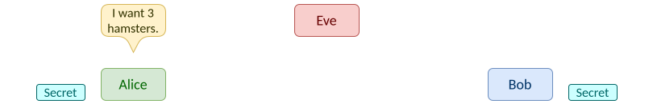
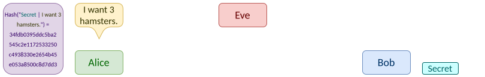
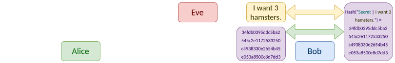
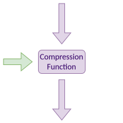

Imagine you really, really like this one book. In fact, you like it so much that you decide to give a name to every single sentence in that book.
"She looked down." => Gilbert
"He unfolded the parchment and hastily added a postscript." => Johnson
You start naming. Unfortunately, you soon run out of names.
What you need in this situation is some kind of naming system that:
What you're looking for is a cryptographic hash function.
A hash function takes data (in this case, a sentence) and outputs a hash (a name) essentially unique to that data. One such cryptographic hash function is SHA-256, which outputs 64-character hexidecimal names:
"She looked down." => 0563916b9cd91eaa1cf9916fe5b75c4595c170d341a975654dfac59b44ab568d
"He unfolded the parchment and hastily added a postscript." => e56e2b287d08c2e274df79c58f1e0b66c1131de0ed2dfdc24144ce72829e2f19
Using SHA-256, we could assign a unique name to every single piece of text ever written. The names don't roll off the tongue quite as easily, but that's a sacrifice we'll have to accept.
Information is destroyed. More specifically, all information about what and where letters are is destroyed in a perfectly even and entropic way.
Like fingerprints or snowflakes, it is in theory possible for two hashes to be exactly the same. However, no two pieces of data mapping to the same hash have ever been found for the SHA-256 algorithm, and it is currently considered computationally infeasible to find even one pair.
No. Hash functions generally work on any sort of data, so things like videos and images can be hashed too!
Just like hashing isn't limited to text, it also isn't limited by length. The entire Bee Movie script hashes to 27052339536a08543f16b5fa0deb4ce554a70b697b27ee0143302d7e6ec4fe2f.
As it turns out, these hashes are quite useful in a variety of applications.
A major one is in storing passwords. Instead of keeping a copy of your password on hand at all times, all (good) websites simply keep the corresponding hash. When you log in, they can hash your submitted password and see if the result matches what they have. Assuming you typed in your password correctly, the hashes will match, since hashing the same string always outputs the same unique hash.
At the same time, if the website were to get hacked and have all of its stored password hashes stolen, it would be in theory very difficult for the attackers to find your actual password (assuming it was strong enough). This is because a hash reveals nothing about its original text. Therefore, the only way for attackers to find your password is essentially through rapid, educated guessing.
However, as cool as hash functions are, many commonly-used ones come with an interesting flaw.
My name is Alice. I want to send a message to Bob. For once, I don't care if others can see the message, but I do want my friend to be sure that the message came from me and wasn't tampered with. Rumors are that there's this crazy person (Eve) going around messing with peoples' messages.

Therefore, I devise a system. Bob and I have always shared a secret passphrase that we are certain nobody else knows. I will combine our secret passphrase with a copy of my message and hash that.

I send my message along with the calculated hash.
When Bob recieves my message, he can also combine our secret passphrase with the recieved message and hash it in the same way. If the hashes match, he can rest assured knowing the hash could only have come from that specific combination of our secret passphrase and the message.

Even if Eve intercepts the message, she does not have any way to obtain our secret passphrase without hoping to find it by randomly guessing. If our secret passphrase is long enough, this is infeasible. Therefore, she has no way to generate a matching hash for any edits she might want to make to my message.
Or does she?
Internally, SHA-256 is based on something called Merkle-Damgård construction. The way it works is as follows.
First, let us choose a large message we want to hash.
We will split that message into 64-byte blocks. Each letter is one byte.
Notice that in the example provided, there are not enough letters in the second block to fill it out fully! This is no good, because SHA-256's internal functions operate only on 64-byte blocks. What we must do in this situation is add "padding" bytes (meaningless junk bytes) in order to fill out the rest of the block. At the very end of the block, we also include 8 bytes that represent how long the original data was.
Note: these padding and length bytes cannot be represented as letters. We'll denote them using hexidecimal, like this: D3
Now that our blocks are nice and square, we're ready to feed them to the real belly of the beast: SHA-256's compression function. This is what does most of the work destroying information about the data and turning what we have into a nice hash. We won't get too deep into the weeds about how it actually works: just think of it as a function that takes a 32-byte "state" along with a 64-byte block of data, and outputs another state.

That output state is then fed back into the compression function along with a new block of data, and this process repeats until all blocks have been consumed.
What about the first function in the chain? Who will feed it the state it needs? Worry not: it recieves a special, universal default state called the "initialization vector" (IV).
And that's it! We run down the chain...
The final compression function's output state is our final SHA-256 hash!
Wait a minute. If the final hash is just the final state in the chain, can't we just... continue where we left off?
As it turns out, we can! If we simply pretend that the message padding and length bytes were part of the data, we can take the final hash and keep running it through the hash function with new data!
Now we have the hash for a new piece of text, one that looks like this:
Of course, a side effect of including the original padding + length bytes as part of the data is that there will be a bit of garbage scattered before our extended message. To a human reciever, this might give some indication that something was tampered with. In practice, though, the reciever could be a web server, an electronic service, or otherwise oblivious to the suspicious-looking characters.
Similarly, our new blocks will have to be padded as usual, including with correct length bytes. This might trip us up if we don't know the length of the original message. However, in most situations, it isn't very hard or infeasible to guess.
The implication of this is that even if we only know a message's length and hash, we can still generate the hash for a longer message consisting of the original message + padding + some chosen data. We don't even need to know anything else about the original message!
Let's revisit our earlier example scenario. Let's say you're Eve, and you've managed to intercept a message from Alice to Bob that looks like this:
"Hello my dear friend Bob. I am writing an urgent letter to request the shipment of 2 gerbils to my place of residence at once."
Hash: f292d76ba39099213d5d0736801f784b0f797a4e7044489b71b8d9f3d78c1342
You know all about Alice and Bob's little secret hashing setup, though sadly you've never been able to actually find the secret. But now you don't need to! You have a hash, and can guess at the length of the secret to create another valid hash for an extended message! For simplicity, let us assume that you send Bob messages repeatedly until you correctly guess the secret length of 19:
Now you can send a valid message to Bob that looks like this:
Bob will recieve this message, prepend the secret, and find it to be a valid hash! Alice shall soon be met with a most nasty surprise.